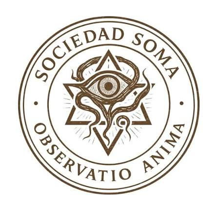

SOMA
Sociedad Organizada de Memorias Arcanas
Información pendiente.
- Nombre
- SOMA
- Nombre completo
- Sociedad Organizada de Memorias Arcanas
- Tipo
- Universidad
- Fundación
- Información pendiente
- Afiliación
- Bastión
- Sede
- Información pendiente
- Estado
- Activa

SOMA
Hace aproximadamente 130 años, SOMA abrió sus puertas en Lunaterra convirtiéndose rápidamente en una de las universidades más prestigiosas del mundo. De cara a la sociedad, es una institución académica de élite, reconocida por la calidad de sus estudios, sus investigaciones y el nivel de sus estudiantes.
Pero la universidad tiene una segunda función que prácticamente nadie conoce.
SOMA es una tapadera.
Entre profesores, investigadores y miembros del personal se encuentran personas vinculadas a Bastión, cuya verdadera misión es observar a los estudiantes y detectar posibles indicios de dones o poderes. No buscan únicamente a quienes ya saben que poseen uno, sino también a aquellos que todavía no han descubierto sus capacidades o cuyos poderes comienzan a manifestarse.
Los estudiantes que despiertan el interés de estos miembros son observados durante meses o incluso años, recopilando información sobre su comportamiento, capacidades y posibles manifestaciones. Cuando consideran que una persona puede ser útil para Bastión, comienza el proceso de acercamiento y, finalmente, su posible reclutamiento.
Por eso, para la mayoría de los habitantes de Lunaterra, SOMA no es más que una universidad.
Para Bastión, es uno de sus lugares de búsqueda más importantes.